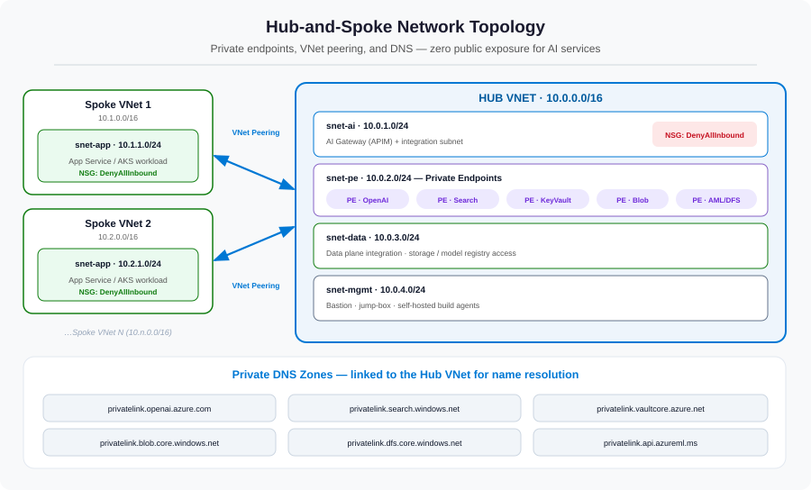

Everything in the hub sits on a network. Get the network right and the rest of the platform inherits a powerful default: nothing is reachable from the public internet. Get it wrong and no amount of RBAC or monitoring later will undo that exposure. This part builds the private foundation — hub-and-spoke VNets, peering, private endpoints, private DNS, and deny-all NSGs.
The problem: a public endpoint is a standing risk
By default, Azure OpenAI, AI Search, Key Vault, and Storage all expose a public endpoint protected by keys or tokens. For a weekend prototype that's fine. For an enterprise platform handling regulated data it is a permanent liability: a leaked key, a misconfigured firewall rule, or an over-broad CORS setting becomes a direct path to your models and your data. In financial services and healthcare, "the data left over a public endpoint" is the sentence nobody wants to write in an incident report.
The fix is to make private the only way in. We do that with four building blocks, shown together below.

Building block 1 — the hub VNet and its subnets
The hub is a single VNet, segmented into purpose-built subnets so that traffic can be isolated and policed per function. A clean starting layout:
- snet-ai — the AI gateway (API Management) and any VNet-integrated compute.
- snet-pe — dedicated to private endpoints for the PaaS services. Keeping these in their own subnet makes the NSG and routing story simple.
- snet-data — data-plane integration for storage and the model registry.
- snet-mgmt — Bastion, a jump-box, and self-hosted build agents that need to reach private resources.
resource hubVnet 'Microsoft.Network/virtualNetworks@2023-09-01' = {
name: 'vnet-ai-hub'
location: location
properties: {
addressSpace: { addressPrefixes: ['10.0.0.0/16'] }
subnets: [
{ name: 'snet-ai', properties: { addressPrefix: '10.0.1.0/24' } }
{ name: 'snet-pe', properties: {
addressPrefix: '10.0.2.0/24'
privateEndpointNetworkPolicies: 'Disabled' // required for PEs
} }
{ name: 'snet-data', properties: { addressPrefix: '10.0.3.0/24' } }
{ name: 'snet-mgmt', properties: { addressPrefix: '10.0.4.0/24' } }
]
}
}A /16 hub gives you room to grow; each /24 subnet is a clean isolation boundary.
Building block 2 — spokes and VNet peering
Each application gets its own spoke VNet with its own address space (10.1.0.0/16, 10.2.0.0/16, …). The spoke connects to the hub with VNet peering — a low-latency, private link on the Microsoft backbone. Peering is configured on both sides; it is not transitive, which is exactly what we want: spokes reach the hub, but not each other.
resource hubToSpoke 'Microsoft.Network/virtualNetworks/virtualNetworkPeerings@2023-09-01' = {
parent: hubVnet
name: 'hub-to-spoke1'
properties: {
remoteVirtualNetwork: { id: spoke1VnetId }
allowVirtualNetworkAccess: true
allowForwardedTraffic: true
}
}
// A mirror 'spoke1-to-hub' peering is created on the spoke side.Building block 3 — private endpoints
A private endpoint projects a PaaS service into your VNet as a private IP. Once Azure OpenAI has a private endpoint in snet-pe and its public network access is disabled, the only way to reach it is from inside the hub or a peered spoke. The public endpoint simply stops answering.
resource openaiPe 'Microsoft.Network/privateEndpoints@2023-09-01' = {
name: 'pe-openai'
location: location
properties: {
subnet: { id: peSubnetId }
privateLinkServiceConnections: [{
name: 'openai'
properties: {
privateLinkServiceId: openAiAccountId
groupIds: ['account'] // the sub-resource to expose
}
}]
}
}You'll create one private endpoint per shared service — Azure OpenAI, AI Search, Key Vault, Blob and DFS (for ADLS), and Azure Machine Learning — each with its own groupIds sub-resource.
Building block 4 — private DNS (the step everyone forgets)
This is the subtle one. When you disable public access, the service's public DNS name must now resolve to the private IP. That only happens if you create the matching private DNS zone, link it to the hub VNet, and attach the private endpoint to it via a DNS zone group. Skip this and your apps will resolve the public name, hit the now-disabled public endpoint, and fail with confusing timeouts.
resource openaiDnsGroup 'Microsoft.Network/privateEndpoints/privateDnsZoneGroups@2023-09-01' = {
parent: openaiPe
name: 'default'
properties: {
privateDnsZoneConfigs: [{
name: 'openai'
properties: { privateDnsZoneId: privatelinkOpenAiZoneId }
}]
}
}You'll need one zone per service family — the six the platform uses are:
| Service | Private DNS zone |
|---|---|
| Azure OpenAI | privatelink.openai.azure.com |
| Azure AI Search | privatelink.search.windows.net |
| Key Vault | privatelink.vaultcore.azure.net |
| Blob (Storage) | privatelink.blob.core.windows.net |
| ADLS (DFS) | privatelink.dfs.core.windows.net |
| Azure ML | privatelink.api.azureml.ms |
nslookup your-openai.openai.azure.com from inside a spoke — it must return a 10.x.x.x address.
Building block 5 — deny-all NSGs
Finally, micro-segment with Network Security Groups. The default posture on hub subnets is DenyAllInbound; you then add narrow allow rules for the traffic you actually want (peered VNet traffic, private-endpoint flows). This makes "deny" the baseline and every opening a deliberate, reviewable decision.
{
name: 'DenyAllInbound'
properties: {
priority: 4096
direction: 'Inbound'
access: 'Deny'
protocol: '*'
sourceAddressPrefix: '*'
destinationAddressPrefix: '*'
sourcePortRange: '*'
destinationPortRange: '*'
}
}Putting it together: the path of a single call
With all five blocks in place, here's what happens when a spoke app calls the AI gateway — entirely on the private network:
- The app resolves the gateway/service name. The linked private DNS zone returns a private
10.xaddress. - Traffic leaves the spoke and crosses VNet peering into the hub — never touching the internet.
- It reaches the private endpoint in
snet-pe, the only door to the service. - NSGs confirm the flow is permitted; everything else is denied.
- The service responds back along the same private path.
What this layer bought us
| Building block | Problem it solved |
|---|---|
| Hub VNet + subnets | Segmentation and a single place to govern AI ingress |
| Spoke VNets + peering | Private connectivity with non-transitive spoke isolation |
| Private endpoints | No public internet door to any AI service |
| Private DNS zones | Names resolve to private IPs so private access actually works |
| Deny-all NSGs | Deny-by-default; every opening is deliberate and auditable |
References
- Hub-and-spoke network topology in Azure
- What is a private endpoint?
- Private endpoint DNS integration
- Network security groups overview
- Virtual network peering
What's next
The doors are private and the corridors are mapped. In Part 3 we move the valuable tenants in: the shared AI services — Azure OpenAI with its model deployments, Azure AI Search for RAG, the data lake, the model registry, and Key Vault — all placed behind the private endpoints we just built, and configured for safe sharing across spokes.